Reiki Healing
A deeply relaxing, hands-on or hands-off healing session that channels universal life energy to restore balance across body, mind and spirit.
- Stress & anxiety relief
- Emotional balance
- Chronic pain support
- Energy alignment
Hythe, United Kingdom
Energy Therapy for Mind, Body & Soul
A sanctuary for Reiki healing and holistic wellness —
supporting your body's own natural ability to heal.
3,695
Combined community
About Angela
I was diagnosed with Multiple Sclerosis at 21 years of age when during this time I was admitted into hospital a total of six times in a six month period due to having one relapse after another. I was required to have lots of tests, medications, intense physiotherapy and eventually a weekly injection to help manage the condition. At this point I was devastated. I was finally working in my dream job within the travel industry and my career aspirations were all taken away from me in an instant, along with my amazing social life and everything else that came along with a young woman living life to the full in her 20's.
Not knowing anything different I had followed the medical advice that had been given to me along with all the medications that had gone along with it for over 20 years. A few of these drugs have destroyed my health (I can't help but see it this way) and I am now healing and following a natural route to reverse what has been done to my body.
I found my wonderful reiki healer in 2013 when I had another bad relapse, because I was in such a dark and desperate place both physically and mentally. Without a doubt this healing energy has completely changed my life for the better. The healing I have experienced has been so profound and so life changing I want to now share my story and healing experiences with others and it is my new dream to teach Reiki to others who can help themselves like I have.
Explore My ServicesChiyu Reiki & Natural Wellness
The word "Chiyu" means "Healing" in Japanese - where Reiki originated - and this is exactly what it has done for me. After leaving my cruise company job of 15 years I wanted to help others and share the amazing benefits of Reiki. I offer Reiki and Crystal therapies to individual clients with a range of health issues or conditions, as well as those who are well and want to stay that way, or are in need of balancing, nurturing, pain relief, deep relaxation or positivity.
It is now a dream come true that I am able to teach Reiki to others who have a chronic illness so that they can help themselves, as I have. I also offer this to those drawn to learn Reiki, therapists who would like to add to their current practice, and those who want to heal themselves and their loved ones.
I am a member of the International Practitioners of Holistic Medicine (IPHM) and an accredited Animal Reiki Practitioner. I also run Reiki Workshops for those who would like to learn more about what Reiki is and how this energy therapy can be used in everyday life.
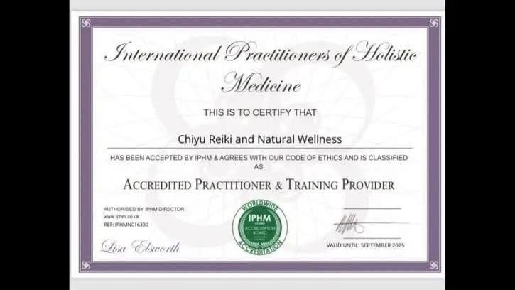
Crystals are a huge part of our Reiki therapy sessions. Chiyu Reiki also sells individual crystals, bespoke crystal sets, crystal embedded candles and pendulums - complete with holistic advice and support, along with cleansing, charging, grounding and protection techniques tailored to your individual needs.
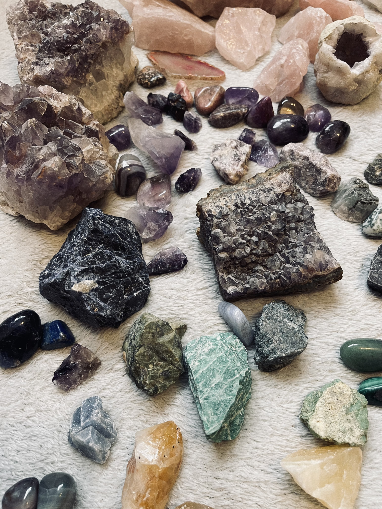
Understanding Reiki
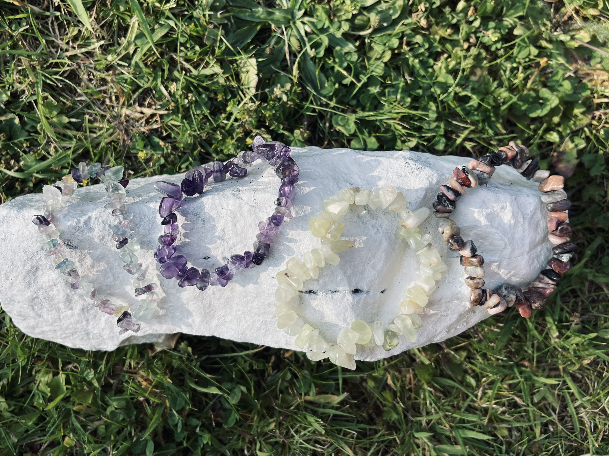
Reiki is an ancient method of healing developed in Japan by Dr Mikao Usui early in the 1900s, although it has been noted in history as far back as 276 BC. The word "Reiki" is pronounced Ray Key and translates into "free flow of universal energy." The first syllable REI means "Universal." The second syllable KI means "Life force energy." Everything that is alive contains and radiates this life force energy.
Reiki energy goes to the deepest levels of a person's being where illnesses have their origin. It works wherever the recipient needs it most, releasing blocked energies, cleansing the body of toxins and working to create a state of balance. Reiki works on the Physical, Mental, Emotional and Spiritual levels of our being. On the Physical level it helps balance the body enabling it to heal itself. On the Mental level, clarity becomes a part of everyday life. On the Emotional level the ups and downs of life become more manageable, and on the Spiritual level it is much easier to meditate and listen to the inner voice.
Reiki is not a Religion and is not affiliated to any Religion. Once attuned to Reiki, all you need to do is place your hands on someone with the intention of helping them and it will flow. Reiki assists the recipient's ability to take responsibility for their own health and wellbeing and helps them make changes in their lifestyle to promote a happier, healthier life.
All Reiki techniques are part of a lineage that has been passed down from teacher to student. As the Reiki Practitioner, I do not heal - the person receiving the energy heals themselves. The Reiki Practitioner is simply the channel through which the energy passes.
As with all alternative healing, Reiki should not be used as a substitute for orthodox medicine. It is never advised that any person receiving alternative therapies should stop their medical treatments.
Reiki promotes your body's own natural self-healing process by balancing the energies in the body along with the organs and glands. It always adapts to the natural needs of the receiver.
What I Offer
Each session is individually guided - honouring your unique energy and intentions.
A deeply relaxing, hands-on or hands-off healing session that channels universal life energy to restore balance across body, mind and spirit.
A personalised holistic consultation weaving together Reiki, mindfulness guidance and natural wellness practices to support your whole wellbeing.
Reiki energy transcends physical space. Distance sessions are just as powerful and profound - ideal if you cannot travel or prefer to receive healing in the comfort of your own home.
The Chiyu Experience
Every session begins with a gentle conversation to understand where you are and what you need. There's no rushing, no judgement - only warmth, presence and deep care.
Sessions are available in Hythe or via distance healing. I work with people facing burnout, grief, anxiety, physical challenges and those who simply feel out of alignment with themselves.
11
Five-Star Reviews
100%
Would Recommend
£
Accessible Pricing
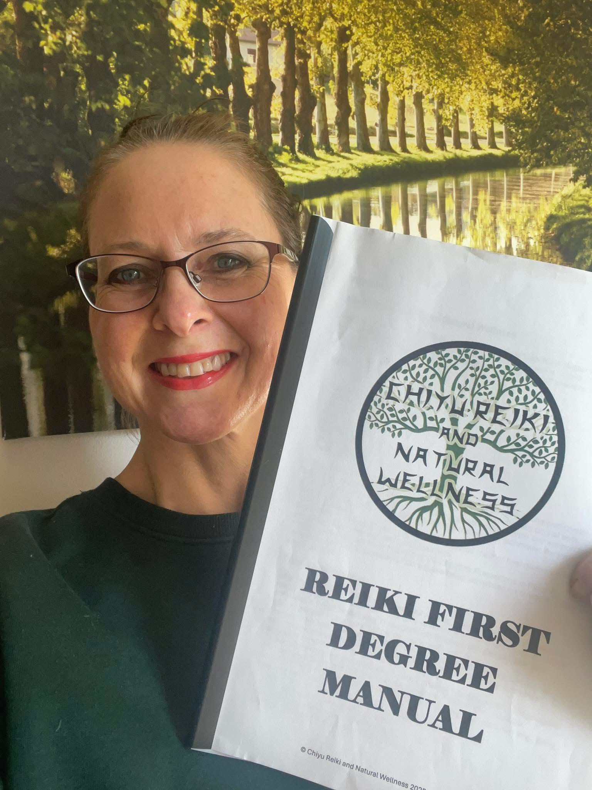
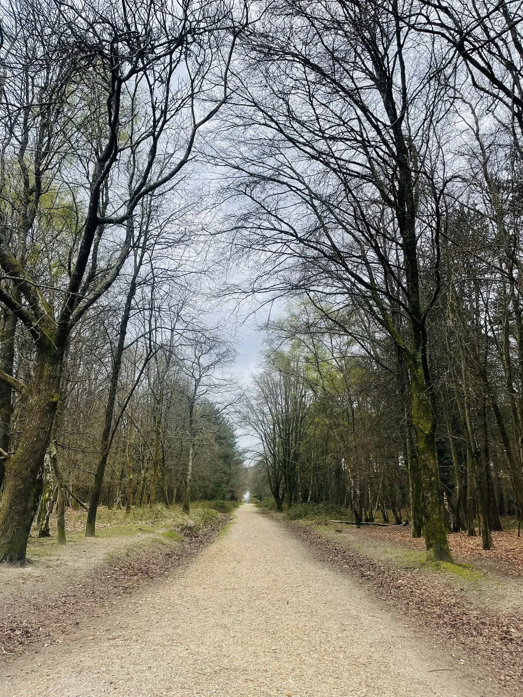
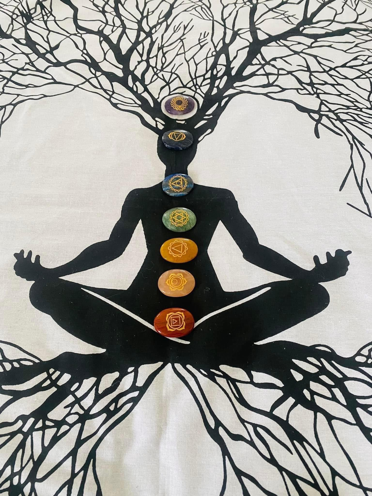
Reiki for Chronic Illness
Living with a chronic illness can feel isolating, exhausting and overwhelming. Reiki doesn't claim to cure — but it meets you exactly where you are, supporting your body's own capacity to find balance, ease and relief.
Angela was diagnosed with Multiple Sclerosis at 21. After more than two decades navigating the medical system, medications and relapses, she discovered Reiki — and it changed everything. That lived experience sits at the heart of every session she offers.
As featured in
MS Pathways
Magazine
Pages 17 – 20
Angela's personal story and journey with Reiki as a person living with MS was featured across four pages of MS Pathways — one of the UK's leading publications for people affected by Multiple Sclerosis.
The article explores how Reiki helped Angela manage symptoms, find peace during relapses, and ultimately led her to become a practitioner dedicated to supporting others with chronic conditions.
"Without a doubt this healing energy has completely changed my life for the better. The healing I experienced was so profound and so life changing — I now want to share that with others." — Angela, Chiyu Reiki & Natural Wellness
Reiki has been shown to ease the fatigue, nerve pain and discomfort that accompany many chronic conditions — offering genuine respite, not just relaxation.
A diagnosis changes everything. Reiki creates a calm, held space to process grief, fear and frustration — helping you reconnect with inner strength.
Reiki works alongside — never instead of — conventional medicine, making it a safe and supportive addition to any treatment plan.
Angela offers First Degree Reiki courses specifically designed for people living with chronic illness — empowering you to use Reiki on yourself, every single day.
Conditions Angela has supported through Reiki:
Whether you're seeking relief, hope or simply someone who truly understands — Angela is here.
In the Press
Angela's story and expertise have been recognised beyond the treatment room. More features will be added here as they are published.
New Pathways — Your MS Magazine of Choice
Pages 17–20 · Real Life Stories
Angela's deeply personal story — from her MS diagnosis at 21, through years of relapses and medication, to discovering Reiki and transforming her life — was featured across four pages of New Pathways, the magazine published by MS-UK supporting thousands of people living with Multiple Sclerosis across the UK.
The article captures Angela's journey from crisis to calling: how Reiki not only helped her manage her own symptoms, but inspired her to train as a practitioner so she could offer the same hope and healing to others living with chronic illness.
Work with AngelaView the article
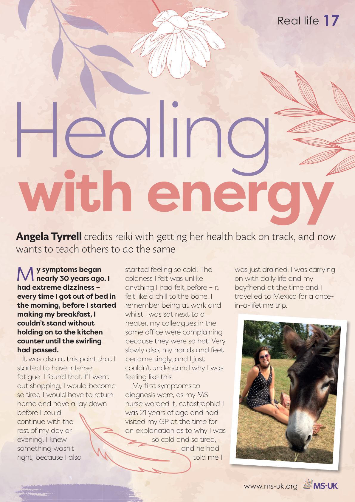
Page 17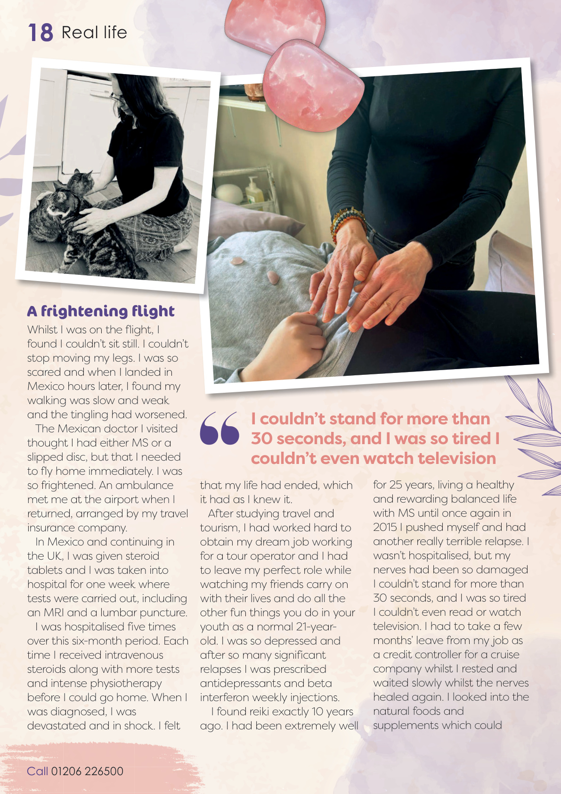
Page 18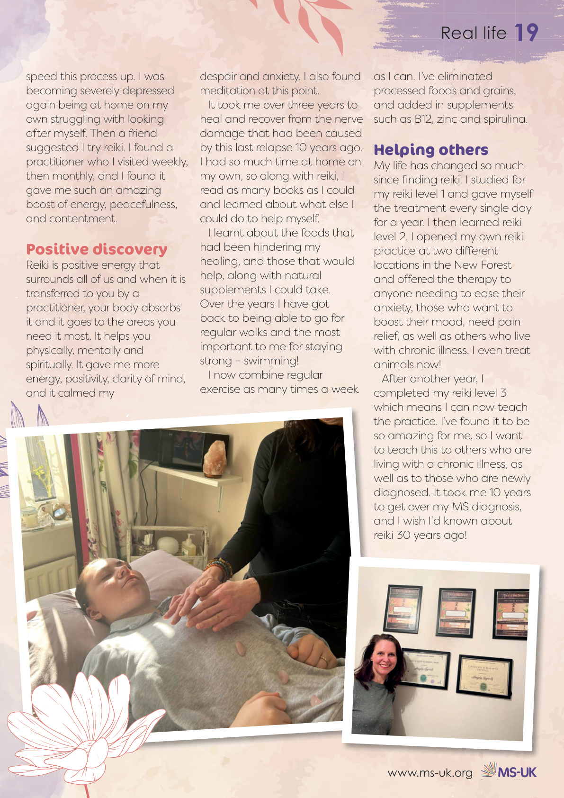
Page 19Click any page to read full size
Client Reflections
★★★★★"I just had a Distant Reiki session with Angela, and it was amazing! I could feel my throat chakra buzzing and saw darkness and light with Angela. I feel so relaxed and so balanced just now. It's just what I needed. Angela is so informative and calming and she has an incredible story of her Reiki journey. Thank you, Angela!"
★★★★★"My first time with Angela today. And it was just what I needed to help with stress levels. I felt so relaxed and at ease - I would highly recommend and I'm definitely booking up again. Thank you so much Angela."
★★★★★"Angela was so nice, explaining her history and how Reiki helped her. I was so relaxed I could feel every part of my body easing to the extent that I nodded off. I spent the next few days feeling the benefits of my session with her."
★★★★★"Reiki with Angela was a beautiful experience, her knowledge about Reiki and crystals is amazing."
★★★★★"I have seen Angela twice now, and she is fantastic. She is friendly, kind, a great listener and so welcoming. She puts you at ease so quickly. I have very tight shoulders due to holding tension there and I feel so much more relaxed and supple after Reiki with her. Recently I had a Tropic facial - the facial was fantastic, my skin soaked in all the great products and the next morning I could see a huge difference. I can't recommend Angela enough."
★★★★★"Angela is amazing! Such amazing energy and after just one Reiki session with her, I feel like a new person. I can't wait for my next session. 100% recommend."
★★★★★"Angela came to my home to do a workshop on Reiki. It was a great afternoon, I felt very at ease straight away when I met Angela. I can highly recommend this workshop, excellent value for money!! I had my first Reiki treatment which was wonderful, I didn't want it to end!! Thank you so much Angela!"
★★★★★"I went for my first appointment with Angela and I must say it was a wonderful experience! I felt very at ease and restful and she is such a warm lovely person that you instantly feel completely lifted of all your stress! Angela definitely has a great knowledge of Reiki and the Tropic facial massage I received beforehand was also very welcoming - super relaxing! Thank you Angela."
★★★★★"Angela has been giving my anxious, rescue dog (Daisy) regular distance Reiki sessions. Being frightened of practically everything meant lots of other methods did not work. Angela has worked wonders - Daisy is so much calmer and relaxed after every session and the effect is lasting longer each time. Angela had spent a lot of time finding out about Daisy and always follows up each session. I would thoroughly recommend Chiyu Reiki."
★★★★★"Had such a lovely experience at Chiyu Reiki and Natural Wellness. The experience itself was so calming and I came away feeling rejuvenated and relaxed. Angela was also super generous with her time and didn't rush the session, taking time to chat about crystals and the Reiki workshops. I would recommend to everyone! Thank you so much!"
★★★★★"Reiki with Angela is always such a relaxing and insightful experience. Angela has so much knowledge and experience with Reiki and crystals, I can always ask her questions and she can help find an answer! Angela tailors her Reiki sessions to each client and uses crystals that will be most beneficial to you. I would definitely recommend Chiyu if you are looking to get into Reiki."
★★★★★"What an amazing experience I had with Angela - she was positive and explained everything clearly to me! I left feeling completely relaxed and calm and would definitely recommend Angela to anyone wanting to experience Reiki Healing. Simply wonderful!"
★★★★★"The most relaxed I have felt in a long time! Angela completely puts you at ease and you feel in very safe hands. Felt like I was in a different place mentally afterwards. Thank you."
★★★★★"I highly recommend Angela for Reiki treatments. She is so friendly and welcoming and goes out of her way to accommodate you. I felt so much lighter and refreshed after my session and really restored. Thank you Angela."
★★★★★"Really great Reiki healer. Could really feel the healing happening. Also well priced and very flexible and convenient."
★★★★★"I thoroughly enjoyed my Reiki session, I felt very comfortable with Angela and left feeling calm and relaxed. I highly recommend Chiyu Reiki and Natural Wellness."
★★★★★"I had my first ever Reiki session with Angela. Angela made me feel very comfortable for my first session, she explained everything thoroughly and answered any questions I had clearly. Angela is a truly lovely lady, with lots of knowledge. Thank you for making my first experience of Reiki an amazing one. I will definitely be going back for more sessions."
★★★★★"Angela gave my cat her first Distance Reiki session this week. It was so interesting, and I have seen such an amazing difference in my cat. Angela is so lovely and made us both feel at ease. I would highly recommend Angela and the Pet Distance Reiki sessions!"
★★★★★"I had a wonderful Reiki session with Angela yesterday - I was a little sceptical but found Angela to be extremely knowledgeable and she explained each part of the process before she began. After a particularly stressful period in my life, I am feeling absolutely great today. I feel so relaxed and like I have had a huge weight lifted from my shoulders. I had the best sleep I have had in years last night. I absolutely recommend Chiyu Reiki and will definitely be having regular treatments. Thank you Angela."
★★★★★"Had my first Reiki session with Angela yesterday, and it was so interesting! The Reiki itself left me feeling calm, relaxed and my mind feels so clear. I saw purples, pinks and blues, as well as white light through the treatment. Definitely recommend Reiki with Angela, if you want to relax and become more in-tune with yourself and the world around you."
★★★★★"I was a little bit of a non-believer when Angela was recommended to me through a friend, but it was one of the most amazing feelings I have felt. I saw pink and lilac colours and I felt so wonderfully warm - at the end of the session I felt so light, all the tension in my body had gone. I still feel like that the day after. The aftercare with Angela has been fantastic too. I have never slept so well. I definitely recommend her, especially for non-believers - it was amazing. Thank you Angela."
★★★★★"I had a wonderful Reiki session with Angela at Chiyu Reiki and Natural Wellness. Angela is extremely lovely and highly professional. I would highly recommend her."
22 five-star reviews - 100% of clients would recommend Chiyu Reiki & Natural Wellness.
See All Reviews on FacebookEnergy Exchange
All sessions are offered with care and compassion, tailored entirely to you.
All prices are subject to change. Please get in touch to discuss your needs and book your session.
Your First Visit
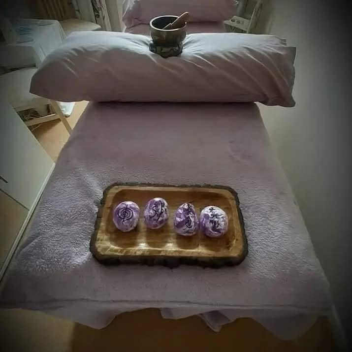
You will be made welcome at our treatment room where I will introduce myself and tell you about my story and how I found the amazing benefits of Reiki, along with my personal journey which brought me to where I am today.
I will find out a little about you, what has drawn you to Reiki, and I will answer any questions you may have. Together we will discuss what you would like to receive from your Reiki and Crystal session - physically and emotionally - and we will set any intentions and manifestations that the Reiki can help with, not just during your session but going forward too.
We will look at and select the best crystals for your individual needs on that day. The crystals chosen can enhance your Reiki being received, and the Reiki can enhance the healing benefits of the crystals.
You will relax on the treatment bed, fully clothed, and the selected crystals will be placed under and around you. Your session will begin with the beautiful sound of a Tibetan Singing Bowl - gifted to me by my Reiki Master Teacher.
Gentle, relaxing music will follow and the truly amazing Reiki energy will flow through my hands as I place them over your eyes and head, then during the 45-minute treatment Reiki will be given to different areas of your body working all the way down to your feet.
At the end of your session you will feel relaxed, balanced and nurtured, along with feeling at peace and energised all at the same time. I will advise that you drink water regularly for the rest of the day to clear away any stagnant energy or unwanted toxins.
You will be given feedback from your session and holistic advice where appropriate. You can also receive a "Message from Spirit" card if you wish. As with all sessions, I will follow up with you the following day to answer any questions you may have.
Receiving Reiki really is a beautiful feeling.
Learn Reiki with Angela
Become a Reiki practitioner and carry this beautiful healing energy with you for life — for yourself, your loved ones and your animals.
Would you like to learn Reiki? Would you like to learn how to harness and use this beautiful energy therapy to help support yourself and others both mentally, physically and spiritually?
You too are able to learn this amazing Energy Therapy, made complete with your Reiki attunement & Certificate — so you are then able to give yourself Reiki whenever and wherever you wish, along with giving Reiki to your family, friends, pets and animals.
Being a member of the IPHM — The International Practitioners of Holistic Medicine — Chiyu Reiki and Natural Wellness is lighting and showing the way for a beautiful journey of personal healing and development.
I have been running two Reiki practices in The New Forest after finding Reiki myself ten years ago when my health deteriorated. This amazing healing energy has changed my life so significantly that it is now my passion to be able to share the benefits of Reiki and teach others so they can heal themselves in the way I have. I have a lineage back to Dr Mikao Usui, along with being a member of The Reiki Guild and IPHM.
Reiki is available to us all — it is not dependent on intellectual capacity or natural talent. It is passed from teacher to student, making it available to anyone and everyone.
In Person · One Day
£150
On this course we will cover:
If you would like to find out more and book into one of our popular one-day courses, just pop over a message or arrange a personal call. We can fit in around you and can also meet over Zoom.
In Person · Flexible Duration
£150
Chiyu Reiki and Natural Wellness is teaching Reiki to those diagnosed, undiagnosed and/or living with a chronic illness — just like myself.
Because I know how every day can be different to the previous, and even our health in the mornings can differ from the evenings, my one and a half day Reiki course can be adjusted to fit in with you and your needs. I will be with you right from the beginning of your Reiki journey and will always be there to help and guide you.
I can fit in with you and around your health — whether that means visiting you at your choice of location, extending the duration of the course, or splitting it into more dates. Because I have been poorly myself, I completely understand how you may be feeling. So there is no pressure — we can do the course together at your own speed and at the preferred time of day to suit you. I am completely flexible for you, the student.
The course content, training and your Attunement will be exactly the same — just delivered at your pace, and the energy exchange remains the same.
In Person · One Day
£150
Take the next step in your Reiki journey with Second Degree — deepening your practice, learning the sacred Reiki symbols, and gaining the ability to send Distance Reiki to anyone, anywhere in the world.
Second Degree unlocks a profound new dimension of healing and is the natural progression for anyone who has completed First Degree and felt the power of this beautiful energy therapy.
Can't Travel? No Problem
All courses are also available to complete entirely by distance — over Zoom, phone or video call — at the same price and with the same full content, attunement and certificate.
Ask About Distance Courses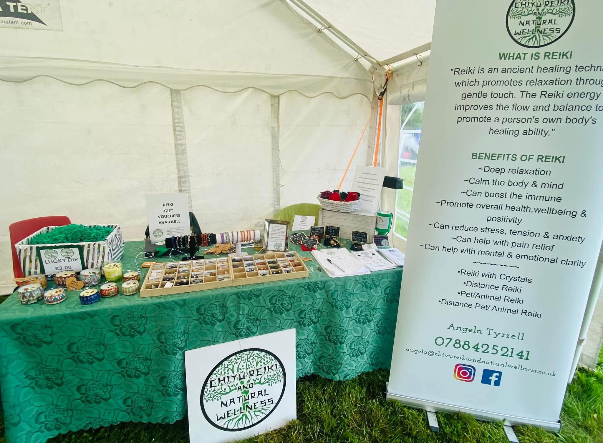
Introductory Workshop · £50
If you are being drawn to Reiki and want to find out a bit more about this amazing Energy Therapy, this workshop is for you. No experience needed — just an open heart and a curious mind.
You will discover:
Animal Healing
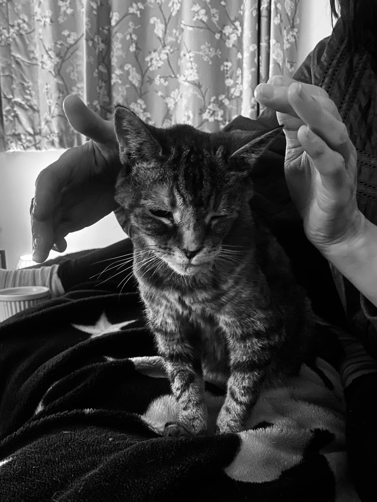
As an accredited Animal Reiki Practitioner, I visit animals and pets in their own homes or within their own fields. If a pet or animal is anxious, doesn't like strangers, or their location is too far away, I can also send Reiki to them distantly.
Animals can suffer from health conditions and illnesses just like us - injuries, allergic reactions, stress, depression, bereavement and the aches and pains that come with age. Reiki can benefit the mind, body and spirit of animals, helping with wellbeing and behavioural issues. It really is a beautiful and special thing to be able to give Reiki to animals.
Home/location visits from £30 (plus travel) · Distance Animal Reiki from £18. Get in touch to arrange a session.
Remote Healing
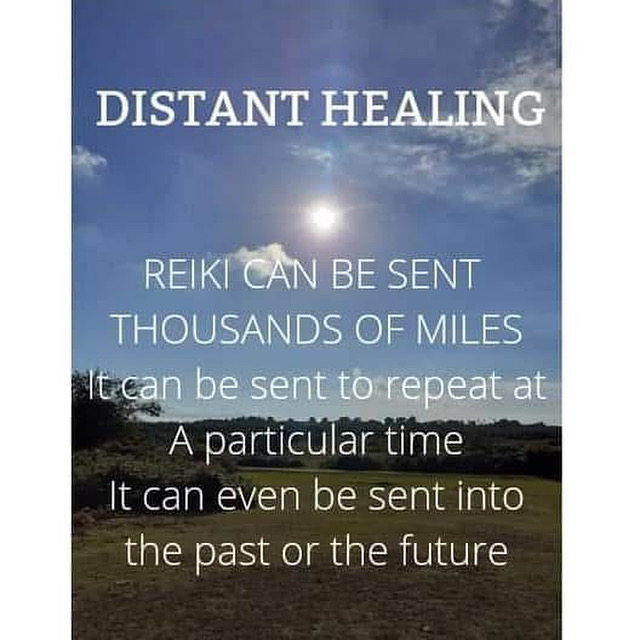
Distance Reiki is ideal for those who cannot or prefer not to visit a Reiki Practitioner in person, and also for animals who do not like to be touched or to be near strangers. A Distance Reiki Healing session is a bit like connecting with you remotely over the internet - but with no internet connection needed.
As a Reiki Practitioner I am taught how to send Distance Reiki Healing to anyone, anywhere, at any time - by setting up energetic links, connecting with the client and directing thought and energy to that person or animal wherever they may be. When I send Distance Reiki I work with the recipient's photo and location and also set up a healing crystal grid to enhance the healing being sent. The benefits are just the same as a one-on-one session.
Prior to your appointment we will speak by phone, messenger or email and a consultation form will be completed. We will discuss any health concerns and I will answer your questions. At our agreed time I will send the Reiki energy remotely - you do not need to do anything. You can relax at home or even be out and about.
You may feel the energy being sent, see colours or visualisations, feel warmth, cold or tingling in areas of your body - or you may feel nothing at all. Approximately 30 minutes later I will message to confirm your session has ended and we will discuss how you felt. I will share what I picked up during the treatment, offer holistic advice and follow up with you the following day.
Distance Reiki sessions from £30 (30 - 60 mins). Get in touch to book.
Specialist Therapies
As an IET therapist I work with the "Integration Channel" - a channel that serves to balance the energy of the body's cellular memory. The objective of IET is to provide a simple and gentle way to open the flow of vital life force within the human body and the human energy field by integrating suppressed feelings from cellular memory and clearing their associated energy blockages.
Energy blockages limit our experience of life and can result in lack of spontaneity, energy depletion and even disease. Common causes include physical trauma, surgery, emotional crisis, suppressed feelings, stress, fear and self-limiting thoughts.
Through two techniques - Energising and Integrating - I channel Integrated Energy through designated hand placements (similar to Reiki) to systematically flood areas of cellular memory, supporting the body's natural ability to re-establish proper energetic balance. Founded by Stevan J. Thayer.
IET sessions from £50 (45 - 90 mins). Get in touch to book.
Chiyu Reiki and Natural Wellness offers Room and Space Clearing to help you move forward from any negative energy influences in your surroundings. I will visit your location and use a range of methods to cleanse and purify your environment, creating a happier, more balanced space with a more positive flow of energy.
Our homes, living spaces and working environments can make us feel out of sorts, unmotivated or even unwell if we are susceptible to picking up negative influences. This is especially important after energy healing sessions, if you have moved into a new home, or where past arguments or difficult events have occurred.
Clearing the energy of rooms and spaces can lead to stress reduction, improved mood, boosted productivity and enhanced overall wellbeing.
Room/Space Clearing is available upon request - please contact me to discuss your needs.
Tropic Ambassador
As an organic Tropic Skincare and Make Up Ambassador it is our mission for better beauty. I offer you, your family and girlfriends a FREE one-on-one Skincare or Make Up Consultation - or both - with advice tailored to your specific skin type, using clinically effective, multi award winning and freshly made products.
Host your own Tropic afternoon or evening party at your home or our location. Invite your friends and family and receive a 15% allowance to spend on Tropic products for yourself, along with exclusive advice and offers on the day.
Workshops for up to 4 guests including Teenage, Mother and Daughter sessions. We work through a bespoke step-by-step tailored skincare regime where you can each try the products for yourselves, with offers available on the day.
Start your new adventure by becoming a Tropic Ambassador yourself with my full support. Make your starter kit investment, share the beauty you love and start earning - all while joining a mission for better beauty.
Get in Touch →Not Sure Where to Start?
Whether you're curious about Reiki, living with a chronic illness and wondering if energy therapy could help, or interested in learning Reiki yourself — Angela offers a free, no-obligation call or video call to answer your questions.
There's no pressure, no commitment — just a warm, honest conversation with someone who truly understands. Calls are available by phone or video (Zoom / FaceTime / WhatsApp) at a time that suits you.
Get in Touch
I'd love to hear from you. Whether you have questions or are ready to book, reach out and I'll respond as soon as I can.